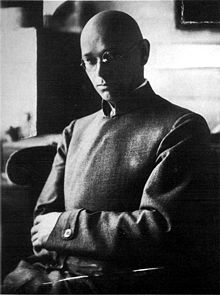

Johannes Itten
Johannes Itten (11 November 1888 – 25 March 1967) was a Swiss expressionist painter, designer, teacher, writer and theorist associated with the Bauhaus (Staatliches Bauhaus) school. Together with German-American painter Lyonel Feininger and German sculptor Gerhard Marcks, under the direction of German architect Walter Gropius, Itten was part of the core of the Weimar Bauhaus.

Itten's work on color is also said to be an inspiration for seasonal color analysis. Itten had been the first to associate color palettes with four types of people, and had designated those types with the names of seasons. His studies of color palettes and color interaction directly influenced the Op Art movement and other color abstraction base movements. Shortly after his death, his designations gained popularity in the cosmetics industry with the publication of Color Me A Season. Cosmetologists today continue to use seasonal color analysis, a tribute to the early work by Itten.